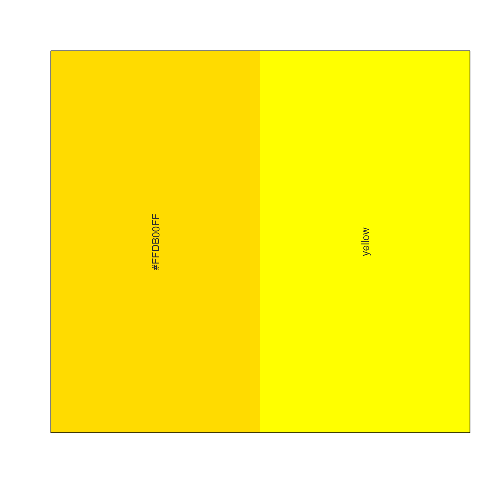
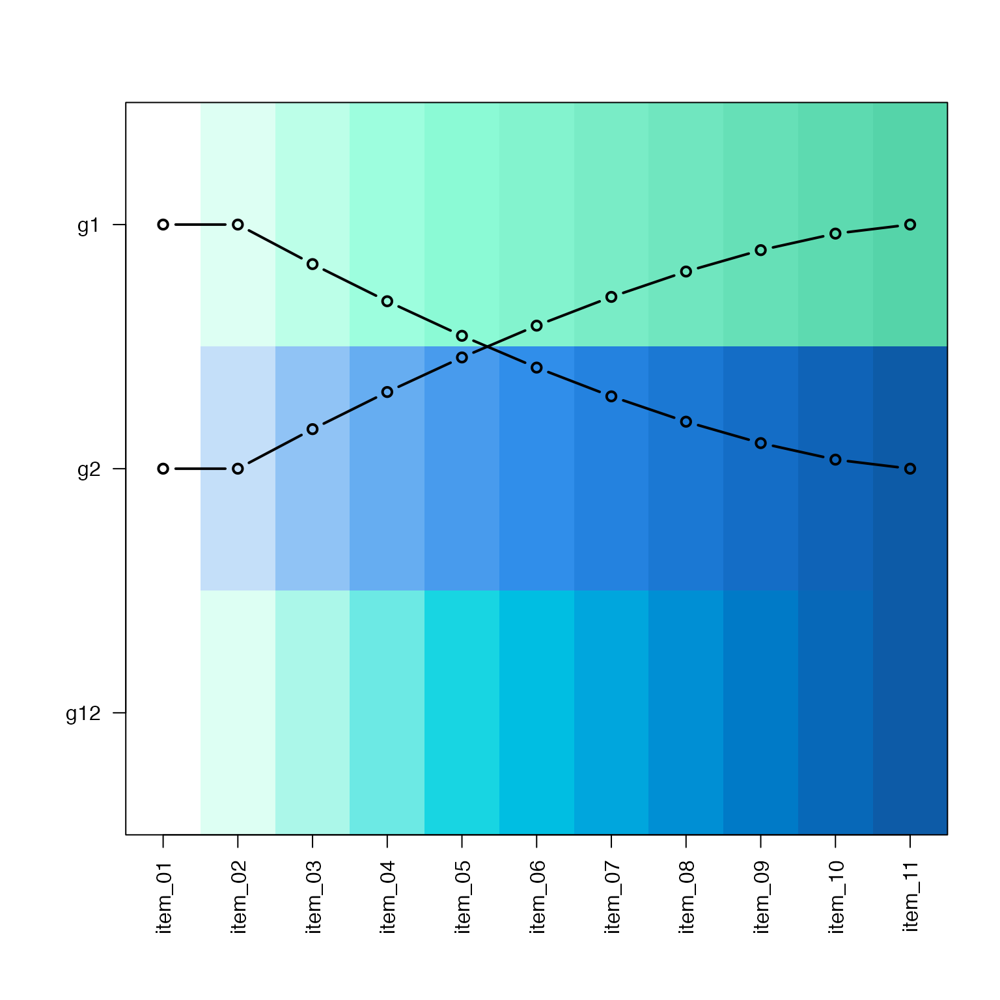
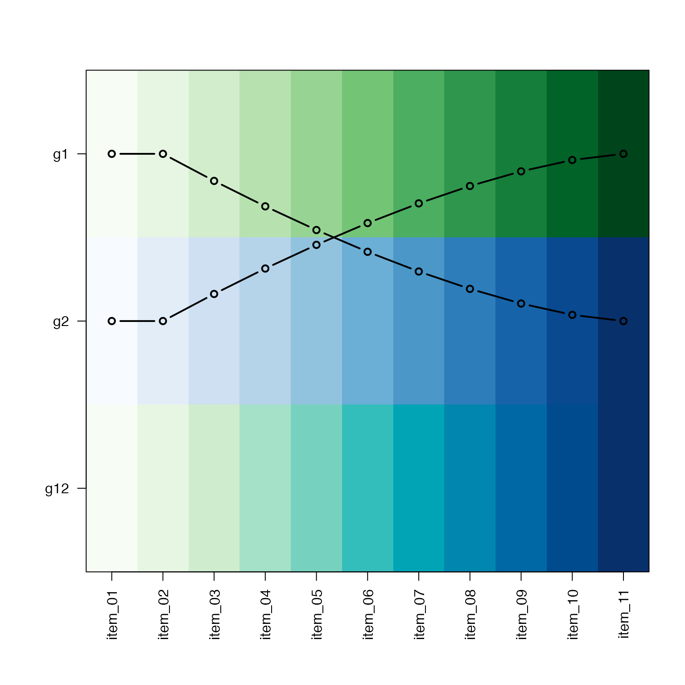
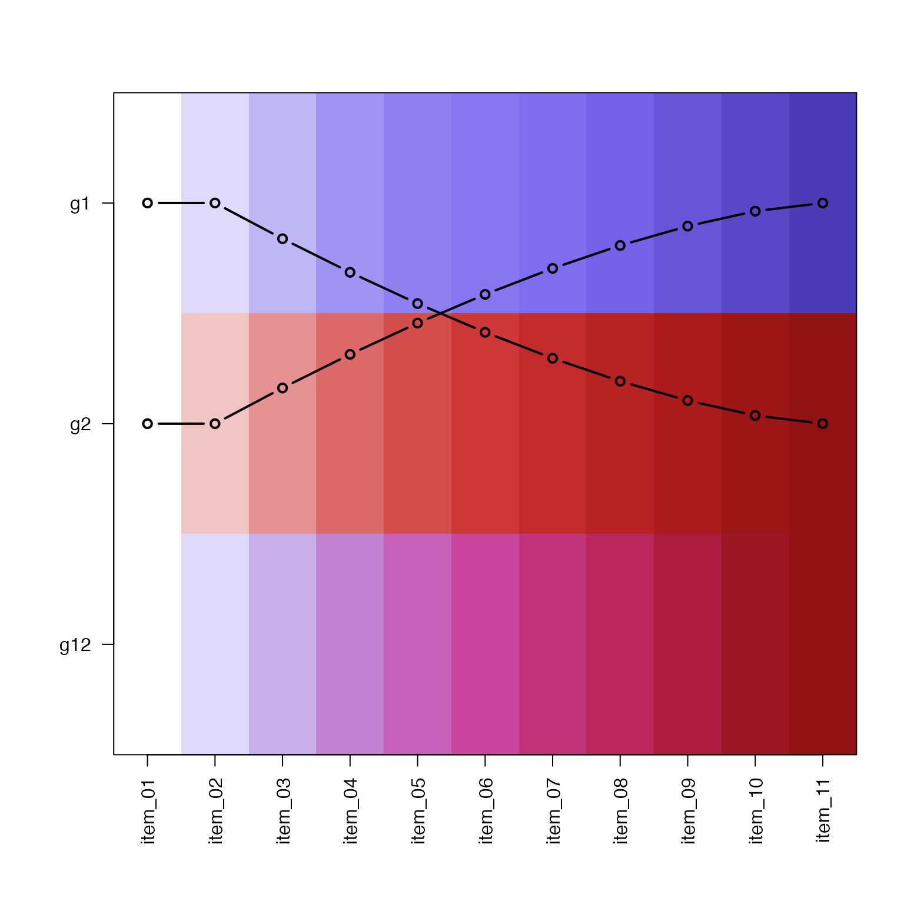
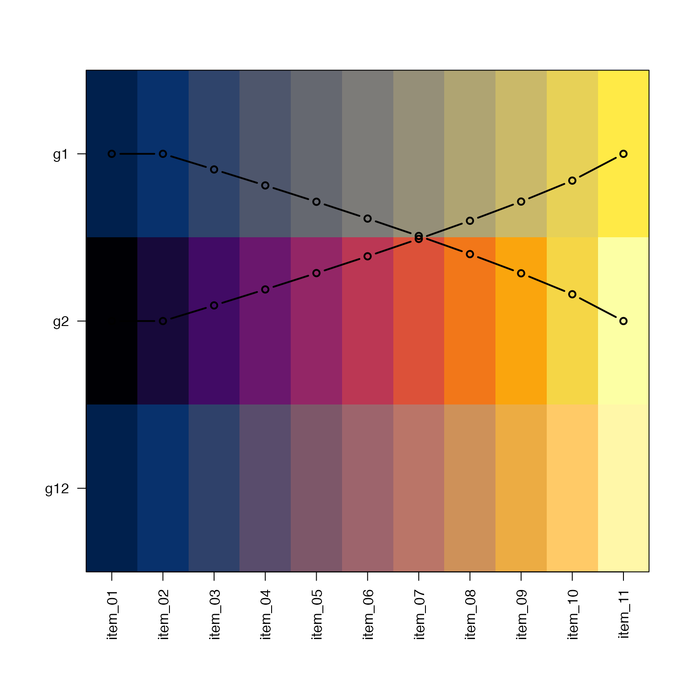
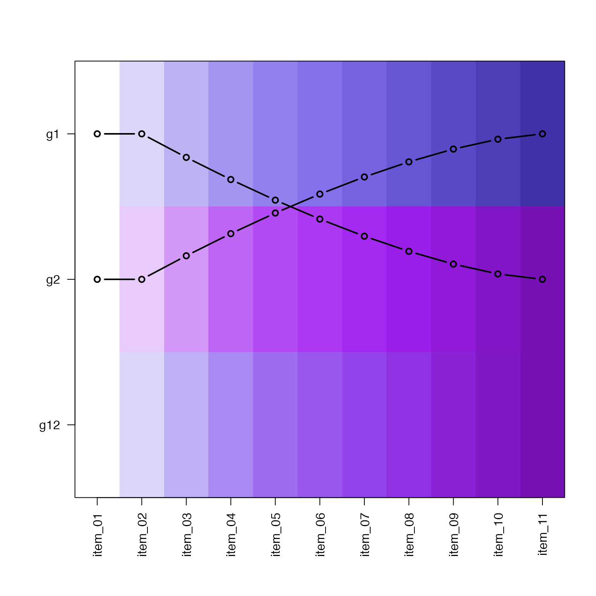
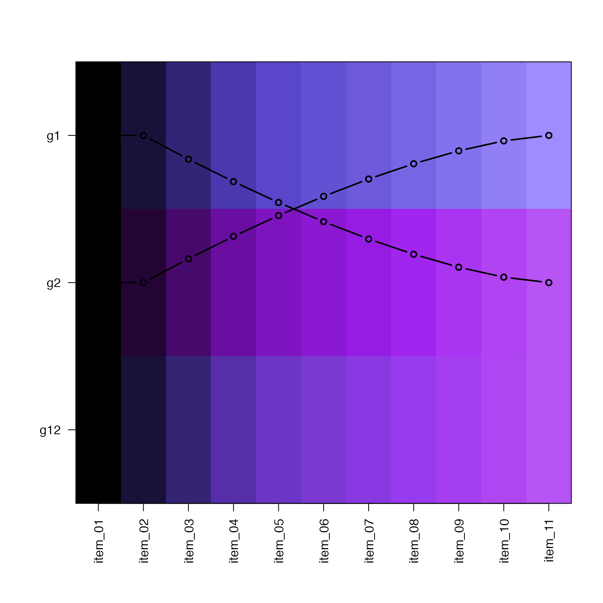
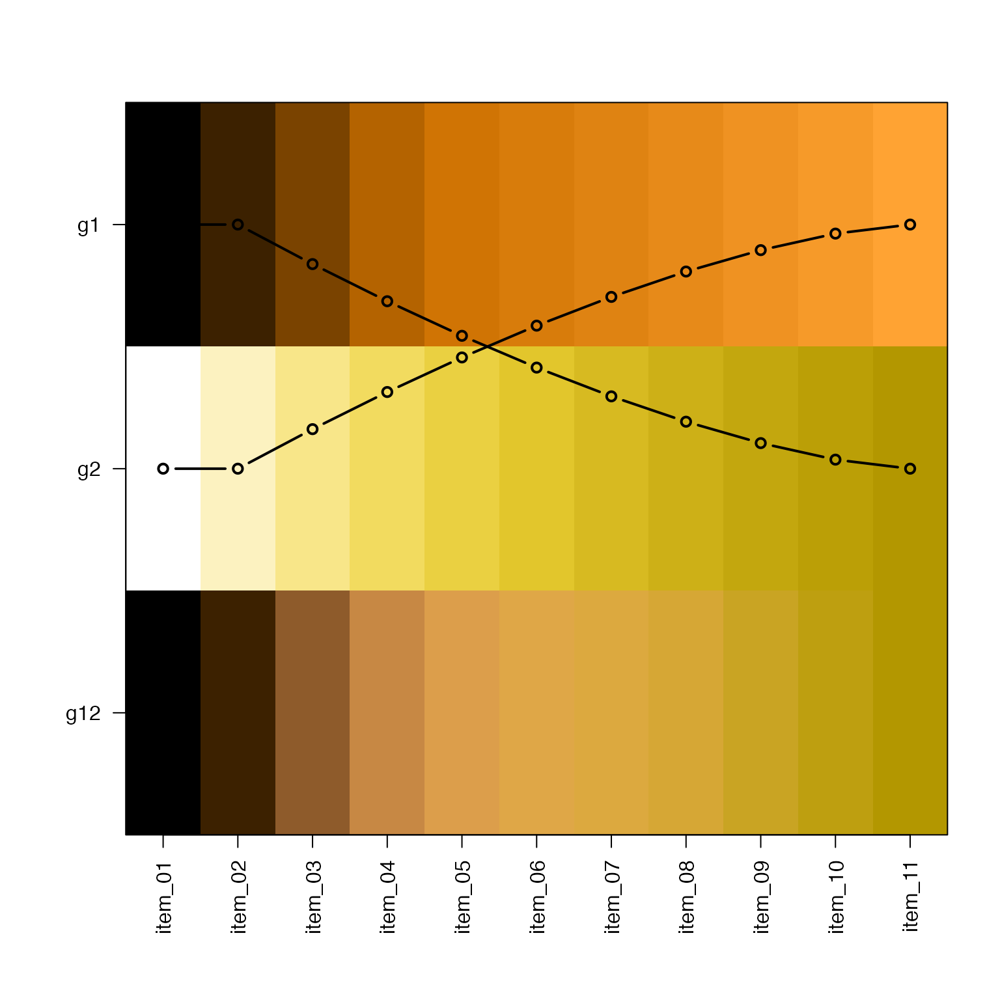
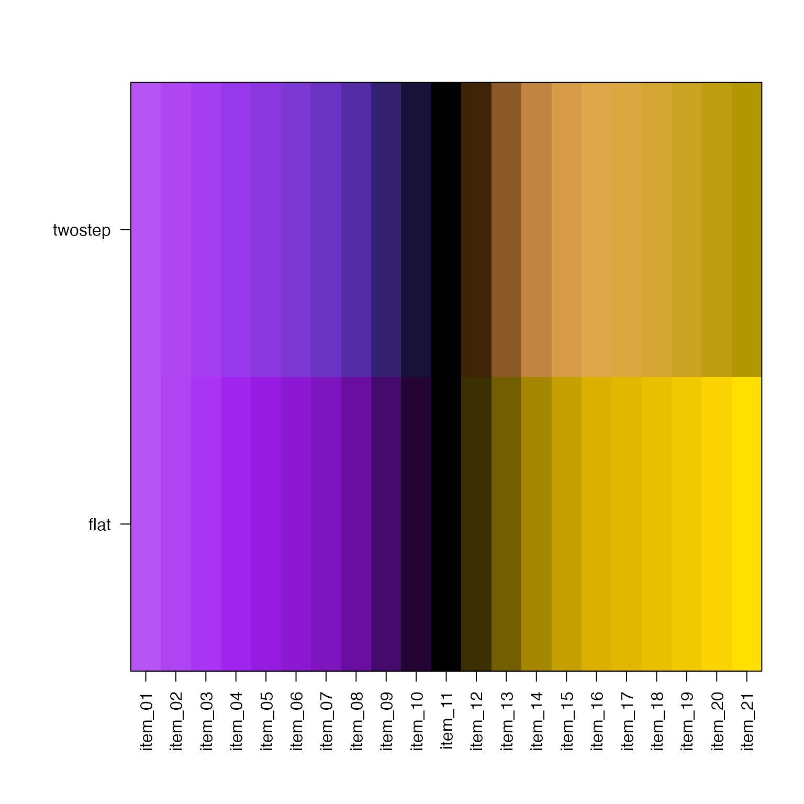

Create two-step linear gradient by gradually blending two linear color gradients
twostep_gradient( color1 = NULL, color2 = NULL, n = 11, lite = TRUE, defaultBaseColor = NULL, adjust = 1.5, do_fixYellow = TRUE, debug = FALSE, ... )
Arguments
| color1 |
|
|---|---|
| color2 |
|
| n |
|
| lite |
|
| defaultBaseColor |
|
| adjust |
|
| do_fixYellow |
|
| debug |
|
| ... | additional arguments are passed to |
Details
This function is intended to produce a two-step linear gradient
effect, similar to the strategy used by RColorBrewer, but
without specific color constraints. See examples.
This function takes two color gradients and blends them
using a weighting scheme that begins with 100% color1, and
gradually becomes 100% color2.
The input color1 and color2 can be any input recognized
by jamba::getColorRamp(). For example a single color can
be used to create a gradient, or the name of a known color
gradient can be used, for example "Reds" will refer
to RColorBrewer palette "Reds". See the examples.
In general most gradients can be blended using this function to produce a new color gradient where both the visual intensity and color hue vary along the gradient, making each color step more visibly distinct than when only the visual intensity changes.
When supplying a single color as input to color1 or color2
it sometimes works best to alter the brightness of one or both
colors so the intermediate gradients have similar intensities.
Experimenting with debug=TRUE is recommended.
See also
Other colorjam gradients:
col_div_xf(),
col_linear_xf(),
make_jam_divergent()
Examples
ts <- twostep_gradient("yellow", debug=TRUE)#> w1 w2 #> 1 1.00000000 0.0000000 #> 2 1.00000000 0.0000000 #> 3 0.83805248 0.1619475 #> 4 0.68593553 0.3140645 #> 5 0.54433105 0.4556689 #> 6 0.41408666 0.5859133 #> 7 0.29629630 0.7037037 #> 8 0.19245009 0.8075499 #> 9 0.10475656 0.8952434 #> 10 0.03703704 0.9629630 #> 11 0.00000000 1.0000000ts1 <- twostep_gradient("orange2", "firebrick", n=11, debug=TRUE)#> w1 w2 #> 1 1.00000000 0.0000000 #> 2 1.00000000 0.0000000 #> 3 0.83805248 0.1619475 #> 4 0.68593553 0.3140645 #> 5 0.54433105 0.4556689 #> 6 0.41408666 0.5859133 #> 7 0.29629630 0.7037037 #> 8 0.19245009 0.8075499 #> 9 0.10475656 0.8952434 #> 10 0.03703704 0.9629630 #> 11 0.00000000 1.0000000ts2 <- twostep_gradient("aquamarine", "dodgerblue", n=11, debug=TRUE)#> w1 w2 #> 1 1.00000000 0.0000000 #> 2 1.00000000 0.0000000 #> 3 0.83805248 0.1619475 #> 4 0.68593553 0.3140645 #> 5 0.54433105 0.4556689 #> 6 0.41408666 0.5859133 #> 7 0.29629630 0.7037037 #> 8 0.19245009 0.8075499 #> 9 0.10475656 0.8952434 #> 10 0.03703704 0.9629630 #> 11 0.00000000 1.0000000# stitch them together with make_jam_divergent() ts1ts2 <- make_jam_divergent(list(ts2=ts2), list(ts1=ts1), n=21) jamba::showColors(ts1ts2)ts1ts2flat <- make_jam_divergent("dodgerblue", "firebrick", n=21) jamba::showColors(list( twostep=ts1ts2[[1]], flat=ts1ts2flat[[1]]))ts3 <- twostep_gradient("Greens", "Blues", n=11, debug=TRUE)#> w1 w2 #> 1 1.00000000 0.0000000 #> 2 1.00000000 0.0000000 #> 3 0.83805248 0.1619475 #> 4 0.68593553 0.3140645 #> 5 0.54433105 0.4556689 #> 6 0.41408666 0.5859133 #> 7 0.29629630 0.7037037 #> 8 0.19245009 0.8075499 #> 9 0.10475656 0.8952434 #> 10 0.03703704 0.9629630 #> 11 0.00000000 1.0000000ts4 <- twostep_gradient("slateblue2", "firebrick", n=11, debug=TRUE)#> w1 w2 #> 1 1.00000000 0.0000000 #> 2 1.00000000 0.0000000 #> 3 0.83805248 0.1619475 #> 4 0.68593553 0.3140645 #> 5 0.54433105 0.4556689 #> 6 0.41408666 0.5859133 #> 7 0.29629630 0.7037037 #> 8 0.19245009 0.8075499 #> 9 0.10475656 0.8952434 #> 10 0.03703704 0.9629630 #> 11 0.00000000 1.0000000ts5 <- twostep_gradient("cividis", "inferno", n=11, debug=TRUE, adjust=-1.2)#> w1 w2 #> 1 1.0000000 0.00000000 #> 2 1.0000000 0.00000000 #> 3 0.9065106 0.09348938 #> 4 0.8110475 0.18895253 #> 5 0.7132755 0.28672454 #> 6 0.6127353 0.38726468 #> 7 0.5087619 0.49123811 #> 8 0.4003123 0.59968768 #> 9 0.2855330 0.71446705 #> 10 0.1602500 0.83975005 #> 11 0.0000000 1.00000000gr1 <- twostep_gradient("slateblue", "purple", debug=TRUE)#> w1 w2 #> 1 1.00000000 0.0000000 #> 2 1.00000000 0.0000000 #> 3 0.83805248 0.1619475 #> 4 0.68593553 0.3140645 #> 5 0.54433105 0.4556689 #> 6 0.41408666 0.5859133 #> 7 0.29629630 0.7037037 #> 8 0.19245009 0.8075499 #> 9 0.10475656 0.8952434 #> 10 0.03703704 0.9629630 #> 11 0.00000000 1.0000000gr2 <- twostep_gradient("gold", "darkorange", debug=TRUE)#> w1 w2 #> 1 1.00000000 0.0000000 #> 2 1.00000000 0.0000000 #> 3 0.83805248 0.1619475 #> 4 0.68593553 0.3140645 #> 5 0.54433105 0.4556689 #> 6 0.41408666 0.5859133 #> 7 0.29629630 0.7037037 #> 8 0.19245009 0.8075499 #> 9 0.10475656 0.8952434 #> 10 0.03703704 0.9629630 #> 11 0.00000000 1.0000000div12flat <- make_jam_divergent("purple", "gold") jamba::showColors(list( twostep=div12[[1]], flat=div12flat[[1]]))gr1d <- twostep_gradient("slateblue1", "purple", debug=TRUE, lite=FALSE)#> w1 w2 #> 1 1.00000000 0.0000000 #> 2 1.00000000 0.0000000 #> 3 0.83805248 0.1619475 #> 4 0.68593553 0.3140645 #> 5 0.54433105 0.4556689 #> 6 0.41408666 0.5859133 #> 7 0.29629630 0.7037037 #> 8 0.19245009 0.8075499 #> 9 0.10475656 0.8952434 #> 10 0.03703704 0.9629630 #> 11 0.00000000 1.0000000gr2d <- twostep_gradient("darkorange", "gold", debug=TRUE, lite=FALSE)#> w1 w2 #> 1 1.00000000 0.0000000 #> 2 1.00000000 0.0000000 #> 3 0.83805248 0.1619475 #> 4 0.68593553 0.3140645 #> 5 0.54433105 0.4556689 #> 6 0.41408666 0.5859133 #> 7 0.29629630 0.7037037 #> 8 0.19245009 0.8075499 #> 9 0.10475656 0.8952434 #> 10 0.03703704 0.9629630 #> 11 0.00000000 1.0000000div12dflat <- make_jam_divergent("purple", "gold", lite=FALSE) jamba::showColors(list( twostep=div12d[[1]], flat=div12dflat[[1]]))